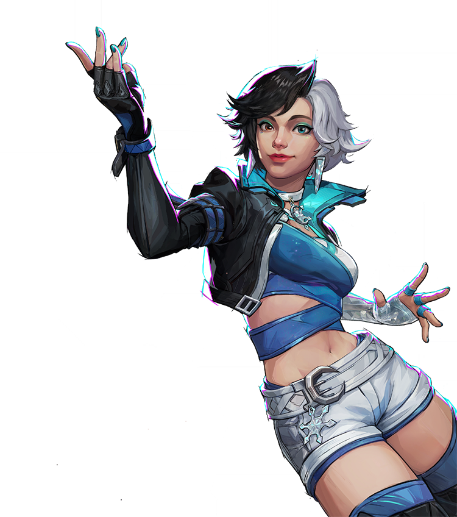
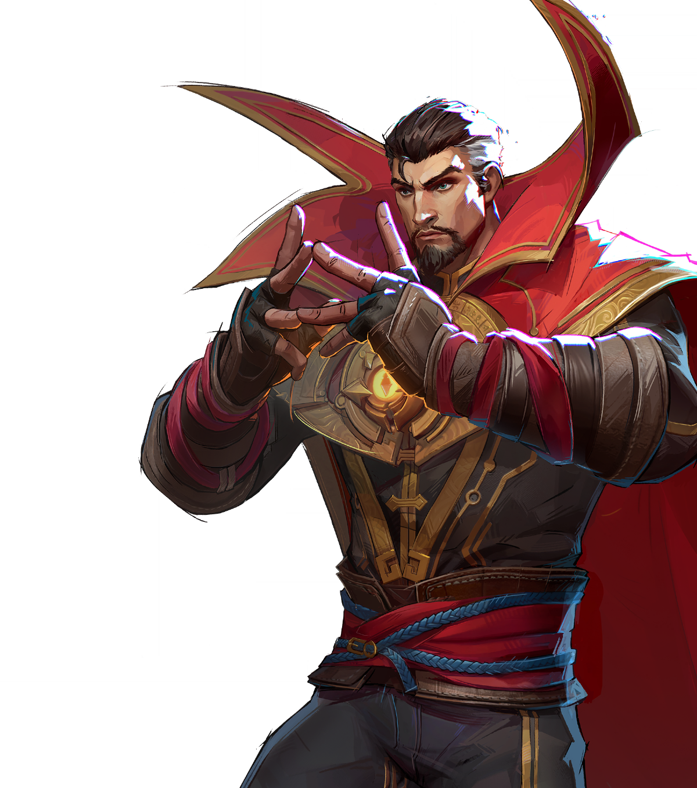

Narrativa & Tema O subtítulo da temporada é “Dooms’ Rise” — centrado no caos causado por experimentos temporais de Doctor Doom que bagunçam a linha do tempo, criando uma ameaça conhecida como Timestream Entanglement. Isso serve como pano de fundo para unir heróis e vilões em batalha.
Conteúdo Disponível na Season 0 Heróis e Personagens
Estreou com 33 personagens jogáveis disponíveis desde o começo. Todos foram desbloqueados e gratuitos para todos os jogadores ao jogar o título pela primeira vez. Isso inclui heróis e vilões clássicos da Marvel divididos em classes como Vanguard, Duelist e Strategist. nessa época cada classe tinha um personagem muito quebrado, cada um em seu papel, por exemplo:
luna snow
dr strange
spiderman

Modos e Mapas
A temporada trouxe 8 mapas para Quick Match e modos competitivos. Incluiu um mapa de Conquest (modo estilo team deathmatch/objetivo). Teve também um Practice Range novo para treinar com heróis sem entrar em partida oficial.
Sistema de Progressão e Battle Pass
Season 0 teve um battle pass menor que temporadas normais, por ser de curta duração (um mês). O passe oferecia cosméticos, sprays, emotes e skins temáticas baseadas em designs tanto de quadrinhos quanto de MCU (Bombastic Bag‑Man, Superior Iron Man, temática de Thor: Love & Thunder, etc.). Os passes não expiravam com a temporada — você podia completar depois — mas exigiam que você recolhesse novamente Chrono Tokens caso ainda quisesse terminar itens não desbloqueados.
Eventos & Extras da Temporada
Twitch Drops – Bastava assistir streamers para ganhar drops de temporada. Entangled Moments Event – Tarefas sazonais para ganhar sprays, cards de galeria e histórias. Gift de Lançamento – Código para resgatar uma skin grátis do Iron Man. Duração, Propósito e Estratégia Breve, planejada apenas para introduzir o jogo ao público antes da Season 1 completa. Serviu como teste real de balanceamento competitivo, servidor e mecânicos antes do conteúdo maior a partir de janeiro de 2025. Mesmo sendo curta, teve retenção muito alta de jogadores ao longo da temporada, o que é raro em jogos live service. Principais Críticas e Feedback da Comunidade Alguns problemas de otimização e performance foram notados por jogadores, principalmente em certos mapas. O sistema de progressão e battle pass recebeu elogios no geral, mas a forma como o progresso era lidado na transição entre temporadas frustrava alguns.